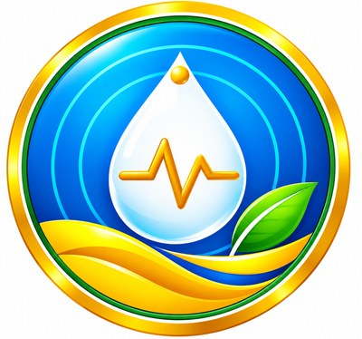
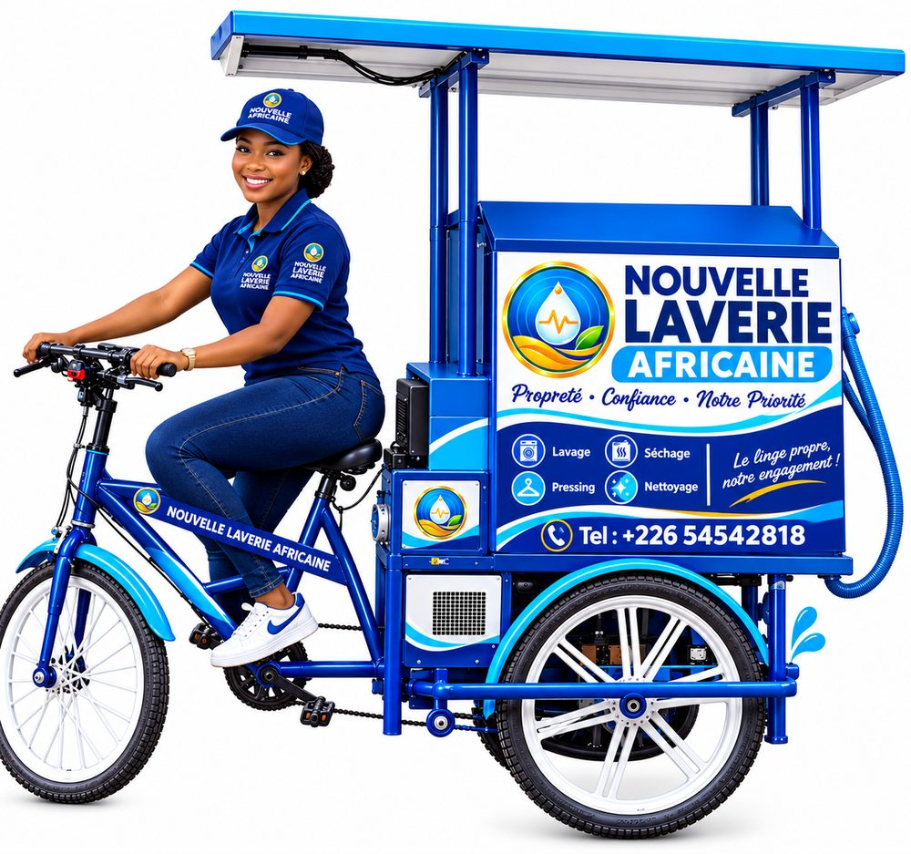
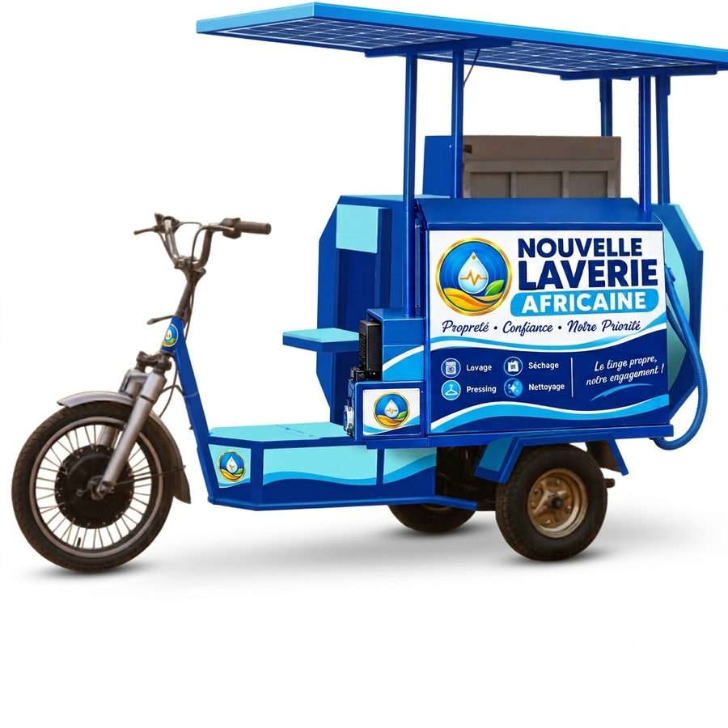

Astuces de linge, de pressing et de lavage auto-moto, petites formations et nouvelles de nos services, avec Maman Awa, Tonton Issouf, Kader et Fati. Un simple coup de fil, nous voici ! Tenkodogo, Bagré, Fada N'Gourma, Koudougou.

0:30Le tricycle solaire vient chez vous avec sa machine à laver intégrée : votre linge est lavé sur place, en quelques minutes. Fati présente l'équipe et ce que la chaîne apporte chaque semaine :
Les 12 premières vidéos, en 5 séries. Chaque série a sa couleur, son personnage et son style de miniature, pour qu'on la reconnaisse d'un coup d'œil.
Quatre visages récurrents, chacun responsable d'une série. On les retrouve d'une vidéo à l'autre, ce qui crée l'habitude et la confiance.
Trois vidéos par semaine, toujours les mêmes jours. La régularité compte plus que la quantité.
| Semaine | Lundi · Short | Mercredi · Tuto | Samedi · Académie ou spot |
|---|
De l'idée à la mise en ligne, en une demi-journée une fois la routine prise.
Une accroche dans les 3 premières secondes, un seul message par vidéo, et une fin qui invite à venir à la laverie. Un assistant IA peut proposer un premier jet à relire.
Outils d'avatars IA (par ex. HeyGen, Synthesia, D-ID) : choisir des avatars africains et une voix française, puis des versions en mooré ou en dioula si l'outil le permet. Autre option : un avatar créé à partir d'un employé volontaire, avec son accord écrit.
Au téléphone, en format vertical pour les Shorts : les mains qui détachent, le fer, la moto qu'on rince. L'avatar explique, les images montrent.
CapCut ou équivalent : sous-titres en gros caractères (beaucoup regardent sans le son), logo NLA, musique libre de droits.
Canva : couleur de la série, 3 à 5 mots, le personnage à droite. Toujours la même mise en page.
Mettre en ligne à heure fixe, puis partager le lien sur le statut WhatsApp de la laverie, Facebook et TikTok. Indiquer dans la description que les personnages sont des avatars virtuels.
Le lavage mobile à 2 000 FCFA les 40 habits est un prix simple et frappant : mettez-le en gros dans les spots et les miniatures. Pour les autres services, citez les prix du catalogue après vérification, car une vidéo ancienne reste en ligne quand un tarif change.
Les informations à mettre dans l'onglet « À propos » de la chaîne et en bas de chaque description de vidéo.

Le tricycle solaire, vedette naturelle des spots : il arrive, le client apporte l'eau, la machine tourne, le linge est lavé sur place.
Maquette de travail : les titres, les dates et les personnages sont des propositions à ajuster avant le lancement.